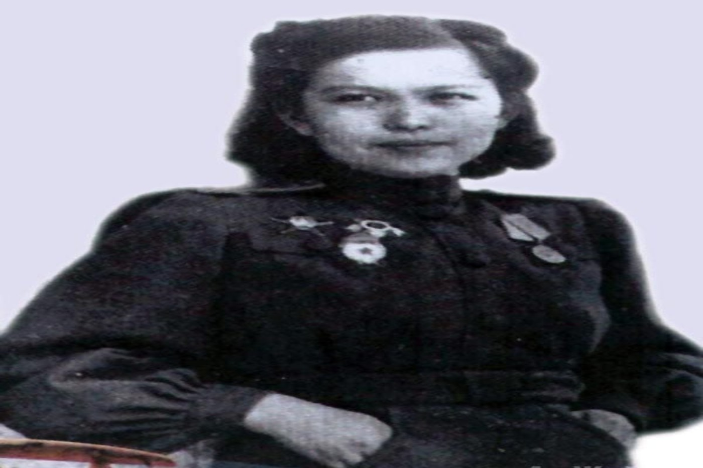
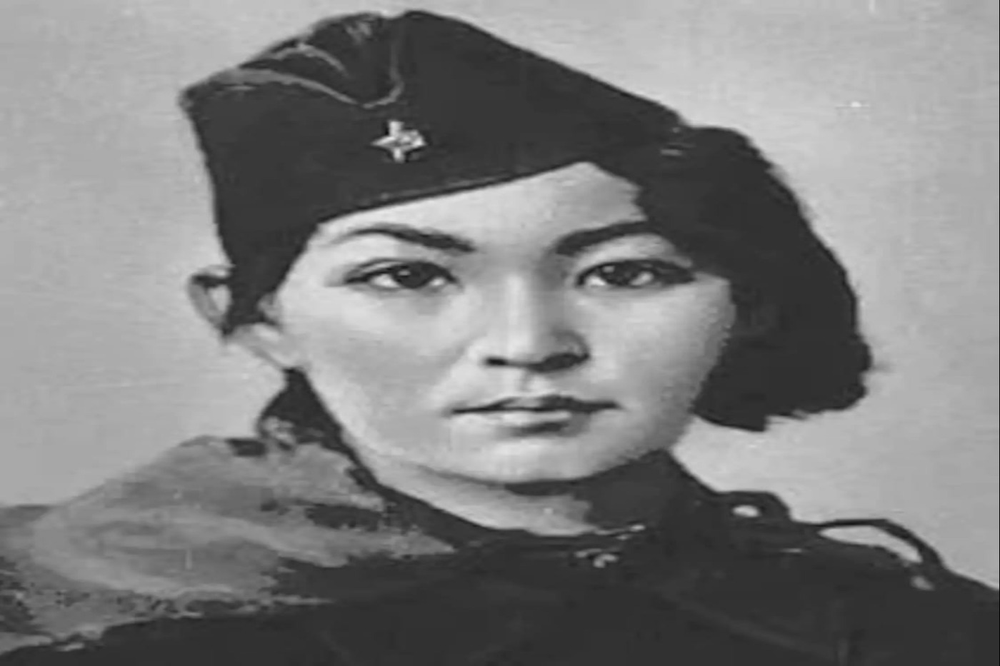

Қазақ тарихындағы нәзік жандылар
 Rustembek Torekhan ( Redactor )
April 8, 2020
Rustembek Torekhan ( Redactor )
April 8, 2020
Мен қазақ қыздарына қайран қалам! Расында, қапысыз қалай айтқан, қайран бабам?! Қазақ аруы сұлулық пен нәзіктіктің символы бола білді. Қиын-қыстау замандарда атқа қонып, елін де қорғады. Қазақ қазақ болып іргесін бекіткелі, тарихымызда еліміз үшін алпауыт еңбек сіңірген әйелдер аз болған жоқ.
Ал, қазақ әйелінің қоғамдағы орны қандай болған ? Бүгінде «қазақ әйелі» деген түсінік бірден теңсіздік мәселесіне алып келеді. Алайда, «Бір елдің патшасы болғанша, жақсы әйелдің күйеуі болған артық» деген бабаларымыз қалайша әйел қауымын төмен санамақ? Қызына төрден орын берген жұрт аруын қалай төмендетпек?

Қазақ қызының батырлығы мен өжеттігіне, даналығы мен қайсарлығына тарихта мысал жеткілікті.
Қазақ қызын ауызға алғанда, Сақ патшайымы Томиристі қалай қалыс қалдырмақпыз?! Парсы патшасы Кирден жерін, елін аман сақтап қалған, бұның бәрі маңызды емес-ау, ар-намысын қорғай білген патшайым барша қазақ қызына үлгі емес пе?!Бертін келе, Уәли хан қайтыс болған соң Орта жүзді басқарған Айғаным ханшаның биік болмысы қандай еді?! Шоқандай алыпты тәрбиелеп шығарған әженің даналығы қазақ баласына білім нұрын шашты. Абайдай асқар тұлғаның қос анасы Зере мен Ұлжанның есімдері қазақ үшін аса қадірлі емес пе? Халқына заңғар тұлға сыйлаған аналардың кемелдігімен кім таласар?! Хиуаз,Әлия мен Мәншүк сынды арулардың батырлығы ел есінде. Батыр қыздар «Қазақ қызы» деген атты абыроймен арқалап шықты, қазақ қызының жарқын болмысын таныта білді.


Сексен алтының ызғарында солған Ләззаттай ел ертеңі үшін қам жеген аяулы арулардың есімі «Тәуелсіздік» деген ардақты ұғымның түсіндірмесі емес пе?!Жоғарыда аталған есімдер қазақ тарихында ерен еңбек сіңірген арулардың бір сыпырасы ғана. Олардың ардақты есімдері әрбіріміздің жадымызда алтын әріптермен сақталған!